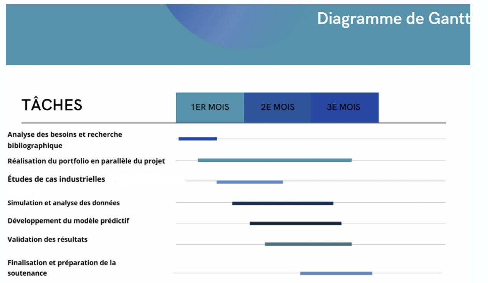

Sprints de 2 semaines, revues quotidiennes, adaptation continue. Idéal pour itérations rapides sur les modèles IA et l'analyse FMDS.
Vérification et validation à chaque phase : conception → réalisation → tests. Assure la robustesse des livrables.
Les grandes phases suivent le cycle en V (besoins, conception, validation) tandis que le développement itératif utilise Scrum.
Chaque phase du cycle en V a fait l’objet d’une validation croisée avec les données de test (split par unité), garantissant l’absence de fuite.

Planification temporelle avec dépendances, jalons clés et répartition des sprints.
Cette organisation a permis une livraison itérative et une réactivité face aux ajustements (ex : optimisation du seuil à 0,10 pour les batteries).